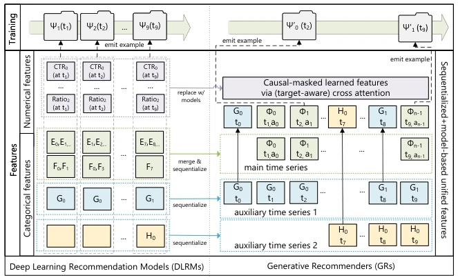
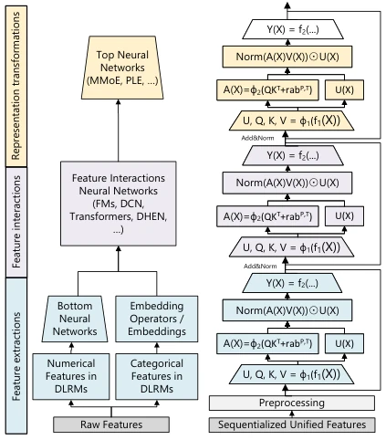
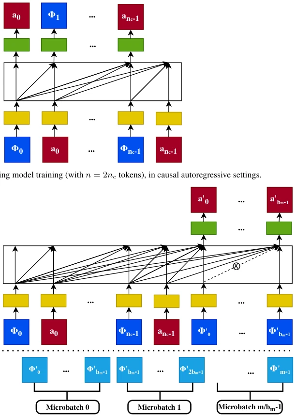
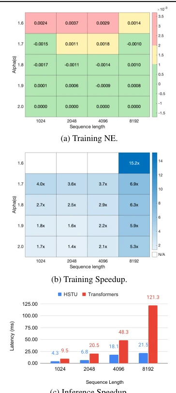
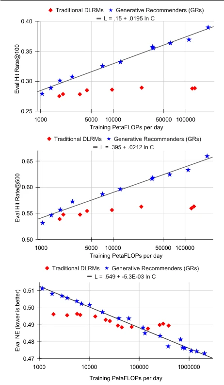
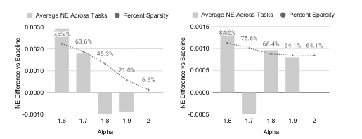
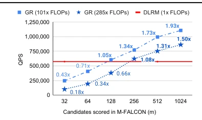
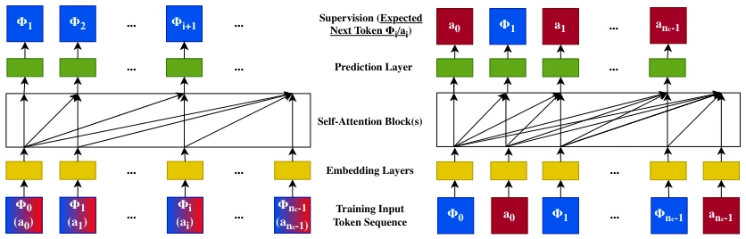
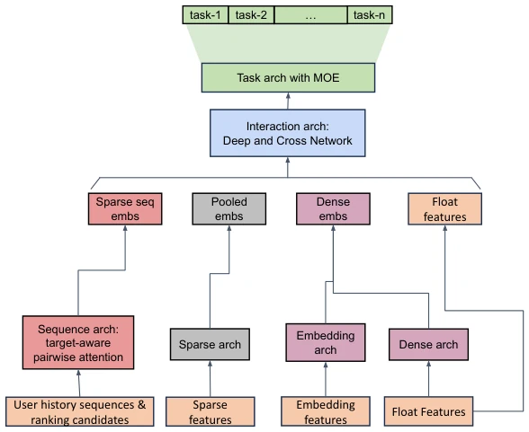
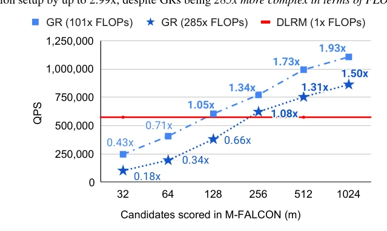

Actions Speak Louder than Words: Trillion-Parameter Sequential Transducers for Generative Recommendations
Jiaqi Zhai, Lucy Liao, Xing Liu, Yueming Wang, Rui Li, Xuan Cao abspdf
论文点评Review
这篇 Meta 论文直接把推荐系统从“工程艺术”拉到了“大模型军备竞赛”赛道。作者声称“行动胜于言语”，把用户行为序列化成生成任务，搞了个万亿参数模型。虽然 DLRM 在工业界混了十年，但这次 GR 模型直接秀肌肉，A/B 测试赢了 12.4%，还验证了 scaling law。不过，把推荐当生成任务，vocab 动态变化且高达十亿级，这难度不亚于让 GPT 去猜用户下一秒想点啥。虽然效率提升了，但训练成本也不低，且依赖特定工业场景。总的来说，这是推荐系统的一次“大模型化”尝试，虽然还没到 ChatGPT 那种程度，但确实让推荐系统有了点“基础模型”的味儿，算是给工业界 DLRM 上了一课，证明了纯序列转导架构在大规模推荐中也能跑通。
This Meta paper directly pulls recommendation systems from the "engineering art" track to the "large model arms race" track. The authors claim "actions speak louder than words", serializing user behavior into generation tasks, and created a trillion-parameter model. Although DLRM has been operating in the industry for ten years, this time the GR model directly shows off its capabilities, winning 12.4% in A/B testing, and also verified the scaling law. However, treating recommendation as a generation task, where the vocabulary changes dynamically and reaches billions, this difficulty is no less than asking GPT to guess what the user wants to click next. Although efficiency improved, training costs are also not low, and it relies on specific industrial scenarios. Overall, this is an attempt at "large modelization" for recommendation systems. Although it has not yet reached the level of ChatGPT, it indeed gives recommendation systems a bit of a "foundation model" flavor, serving as a lesson for the industry's DLRM, proving that pure sequence-to-sequence architectures can also work in large-scale recommendation.
Industry recommendation systems have long relied on DLRM (Deep Learning Recommendation Models), which rely on massive manual feature engineering, and as compute increases, performance improvement encounters a bottleneck (Zhao et al., 2023). Although Transformer succeeds in NLP and vision fields, recommendation systems face three major challenges: features lack explicit structure, billion-level dynamic vocabulary, and compute cost bottlenecks. Existing DLRM cannot linearly improve performance by increasing compute like LLMs, leading to compute waste. The authors hope to draw on Transformer's success, reframing the recommendation problem as a sequence-to-sequence task in generative modeling, utilizing redundancy to improve efficiency, and exploring the Scaling Law of recommendation systems, attempting to break the performance ceiling of DLRM and achieve scale effects similar to LLMs.

Figure 2. Comparison of features and training procedures: DLRMs vs GRs. E, F, G, H denote categorical features. Φi represents the i-th item in the merged main time series. Ψk(tj) denotes training example k emitted at time tj. Full notations can be found in Appendix A.
The overall framework unifies DLRM's heterogeneous features (sparse/dense) into time series, reconstructing them as Generative Recommenders (GRs). The core innovation is the HSTU (Hierarchical Sequential Transduction Units) encoder. 1) Feature unification: Merge user interaction, demographics, and other features into a main time series, numerical features are implicitly captured by the model, reducing manual feature dependency. 2) HSTU architecture: Replaces DLRM's feature extraction, interaction, and transformation modules. Uses Pointwise Aggregated Attention to replace Softmax, adapting to non-stationary vocabularies; Utilizes Stochastic Length (SL) to increase sequence sparsity; Simplifies MLP design to reduce activation memory, supporting deeper networks. 3) Inference optimization: Proposes M-FALCON algorithm, through micro-batching and KV cache, reduces candidate processing cost from O(bmn^2d) to O(n^2d), supports models with 285x complexity, significantly improving QPS under the same budget.

Figure 3. Comparison of key model components: DLRMs vs GRs. The complete DLRM setup (Mudigere et al., 2022) is shown on the left side and a simplified HSTU is shown on the right.

Figure 11. Illustration of the M-FALCON algorithm. Top: model training in GR’s target-aware formulation. Bottom: model inference with m candidates Φ′ 0, . . . , Φ′ m−1, divided into ⌈m/bm⌉microbatches, where we show model inference for the first microbatch Φ′ 0, . . . , Φ′ bm−1 (with 2nc + bm total tokens after Φ0, a0, . . . , Φnc−1, anc−1 are taken into account) above the dotted line. Note that the self-attention algorithm is modified such that Φ′ i cannot attend to Φ′ j when i ̸= j – this is highlighted with “×” in the figure.
Validated on synthetic data, public datasets (MovieLens, Amazon), and industrial-level streaming data. Comparison baselines include SASRec, Transformers, DLRM. Metrics cover NDCG, HR, Normalized Entropy (NE). Results show HSTU is 5.3-15.2 times faster than FlashAttention2 at 8192 sequence length. In industrial A/B testing, GR model improved by 12.4% compared to DLRM. Scaling Law experiments show GR performance grows power-law with compute, up to trillion-parameter scale, while DLRM performance saturates. Ablation experiments confirm the effectiveness of Stochastic Length and HSTU components, proving the importance of sequence length in recommendation scaling.

Figure 5. Encoder-level efficiency: HSTU vs FlashAttention2- based Transformers for Training (a, b) and Inference (c).

Figure 7. Scalability: DLRMs vs GRs in large-scale industrial settings across retrieval (top, middle) and ranking (bottom). +0.005 in HR and -0.001 in NE represent significant improvements. length and other parameters in tandem. This is perhaps the most important advantage of our proposed method, as we’ve shown for the first time that scaling law from LLMs may also apply to large-scale recommendation systems.
其他图片Other Figures

Figure 4. Impact of Stochastic Length (SL) on metrics. Left: n = 4096. Right: n = 8192. Full results can be found in Appendix F.

Figure 6. Comparison of inference throughput, in the most chal- lenging ranking setup. Full results can be found in Appendix H.1.

Figure 8. Comparison of traditional sequential recommenders (left) and Generative Recommenders (right). We illustrate sequential recommenders in causal autoregressive settings and GRs without contextual features to facilitate comparison. On the left hand side, the action types ais are either ignored or combined with item information Φis using MLPs, before going into self-attention blocks.

Figure 9. A high level architecture of a baseline DLRM ranking model (“DLRM (DIN+DCN)” in Table 7) that utilizes major published work including DIN (Zhou et al., 2018), DCN (Wang et al., 2021), and MMoE (Ma et al., 2018).

Figure 12. End-to-end inference throughtput: DLRMs vs GRs (w/ M-FALCON) in large-scale industrial settings. Note that this figure is the same as Figure 6, and is reproduced here to facilitate reading.